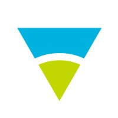
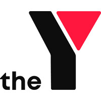

Hi, I'm Suhas Paunikar
Data Scientist



Hello! I'm a dedicated Data Scientist with a passion for transforming raw data into actionable business insights. With expertise in statistical analysis, machine learning, and data visualization, I specialize in solving complex problems and uncovering patterns that drive strategic decision-making.
My journey in data science began with a strong foundation in mathematics and computer science. Through years of hands-on experience, I've developed a unique approach that combines technical expertise with business acumen. I excel at translating complex analytical findings into clear, actionable recommendations that stakeholders can easily understand and implement.
My technical toolkit includes advanced proficiency in Python, R, and SQL, complemented by extensive experience with modern machine learning frameworks like TensorFlow and PyTorch. I've successfully delivered projects ranging from predictive analytics and natural language processing to computer vision and time series forecasting.
What truly drives me is the potential of data science to make a real-world impact. Whether it's optimizing business processes, enhancing customer experiences, or contributing to scientific research, I'm always excited to tackle new challenges and push the boundaries of what's possible with data.
Beyond my professional work, I'm an active contributor to the data science community. I regularly share my knowledge through technical blog posts, participate in Kaggle competitions, and mentor aspiring data scientists. I believe in the power of continuous learning and staying current with the latest developments in AI and machine learning.
Developed an advanced Natural Language Processing system at AFCA to automatically classify financial complaints into specific categories. This system significantly improved the efficiency of complaint handling and reduced manual processing time.
Developed a sophisticated machine learning model to predict customer churn for a telecommunications company. The model analyzes customer behavior patterns and identifies at-risk customers, enabling proactive retention strategies.
Smartgroup Corporation
March 2025 - Present · Melbourne, Australia
Australian Financial Complaints Authority
November 2024 - March 2025 · Melbourne, Australia
Environment Protection Authority Victoria (EPA)
May 2024 - October 2024 · Melbourne, Australia
YMCA Victoria
February 2022 - April 2024 · Melbourne, Australia
Tata Consultancy Services
February 2020 - January 2022 · Melbourne, Australia
Tata Consultancy Services
February 2015 - January 2020 · Pune, India